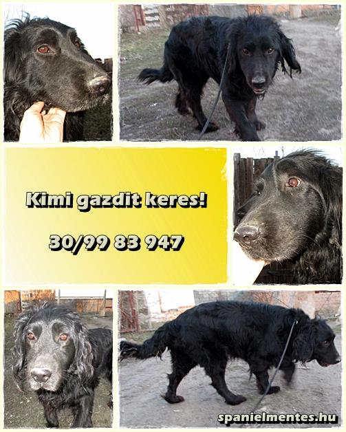

AZ ÖRÖKBEFOGADÁS MENETE
Hogyan fogadhatsz örökbe kutyát a Spánielmentéstől?

Támogassa a Cocker Rocker Spániel Fajtamentő Egyesületet – Adjunk új esélyt a spánieleknek!
Hogyan fogadhatsz örökbe kutyát a Spánielmentéstől?

Név: Kimi
Nem: Kan
Született: 2012.01.01.
Bekerült: 2014.10.20.
Virtuális örökbefogadás: Jelenleg nincs virtuális támogatója
Támogatni szeretném!
Kimi 2012-es születésű legényke.
Gazdái leadták azzal az ürüggyel, hogy állandóan szökik.
Kimi valóban egy minden lében kanál, nem szívesen marad ki az Őt körülvevő eseményekből, így érthető, ha kíváncsi arra is, mi zajlik az utcán.
De természetesen mindezt legszívesebben a gazdájával fedezné fel, aki kielégíti mozgás- és szeretetigényét.
Kimi cserébe a szívét adja, szívesen bújik, gyűjti be a simogatásokat.
Bár az esélytelenség teljes nyugalmával, de mi mégis bízunk abban, lesz, aki észreveszi egy fekete, keverék kanban is jövendő szerelmét és alig várja, hogy otthonába fogadhassa.
Ha képes vagy megnyitni a lelked egy csupaszív fiúcskának, hívd a 30/99 83 947-es telefonszámot.